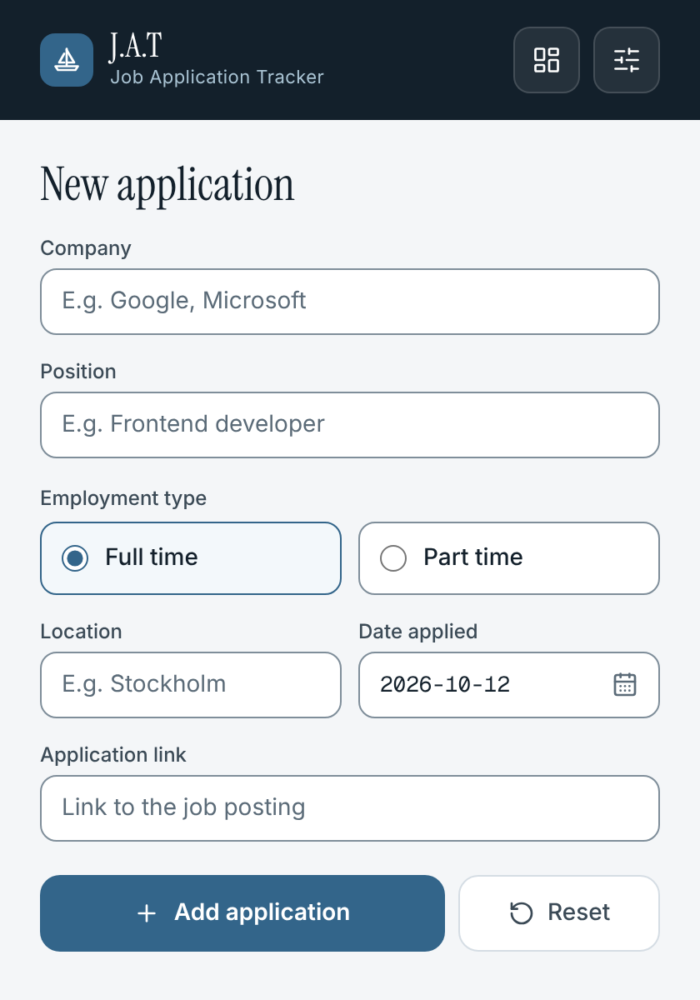
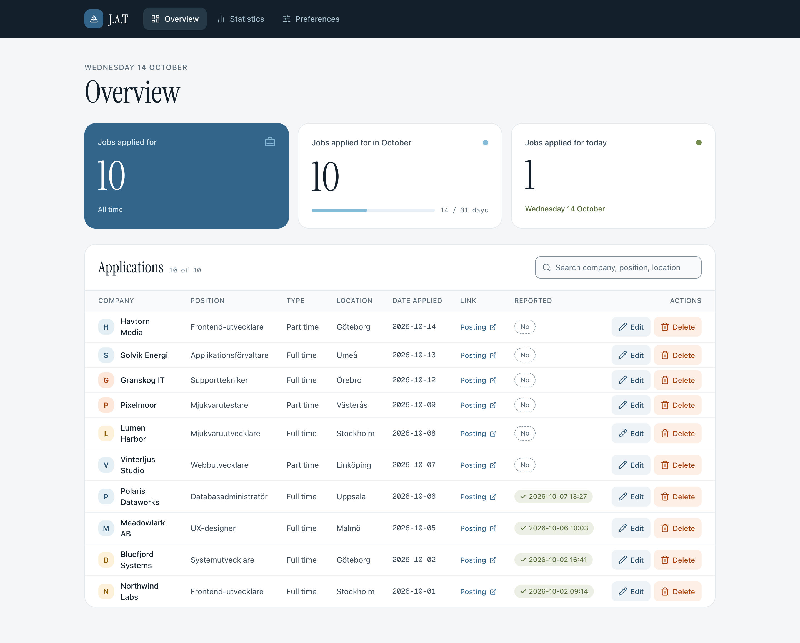
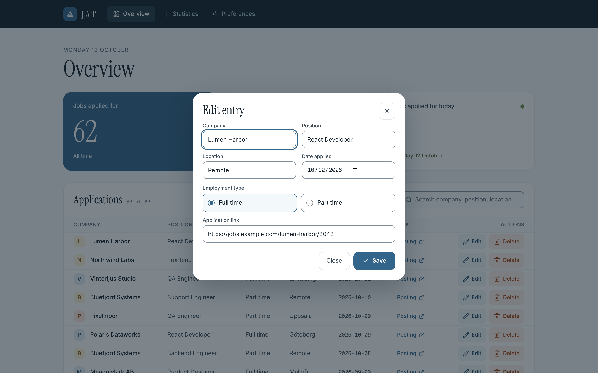
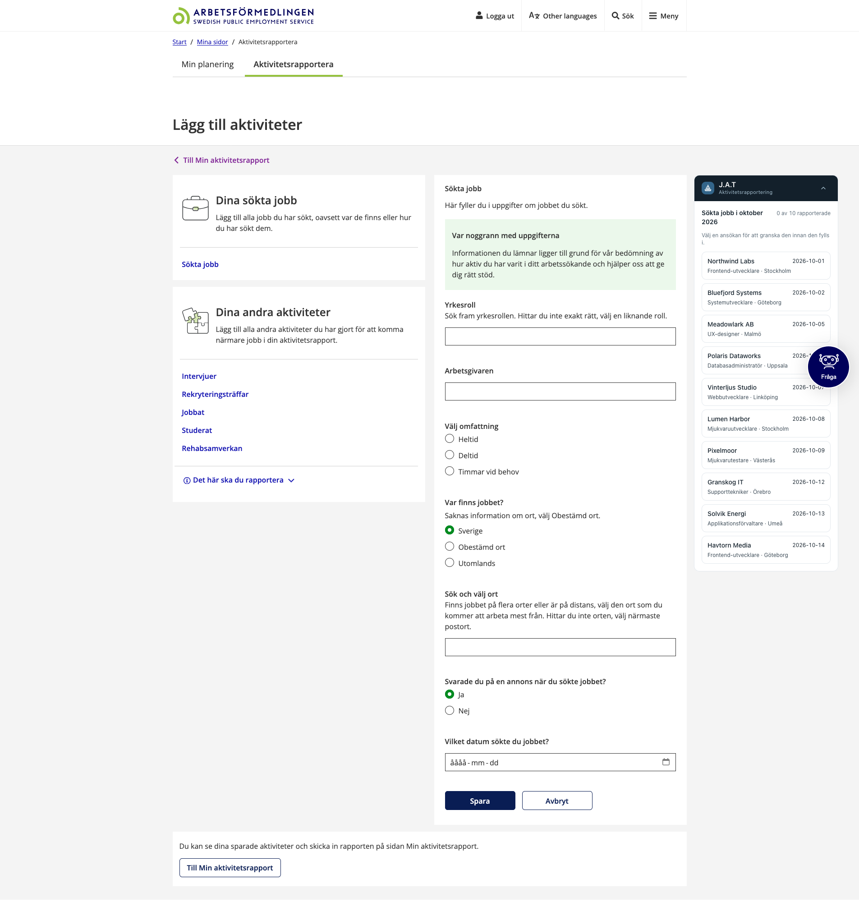
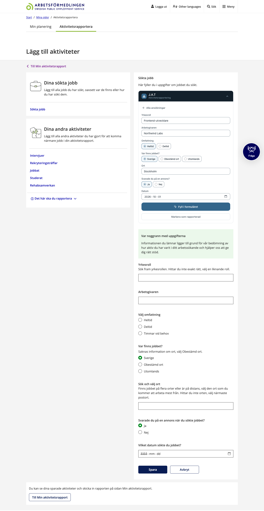
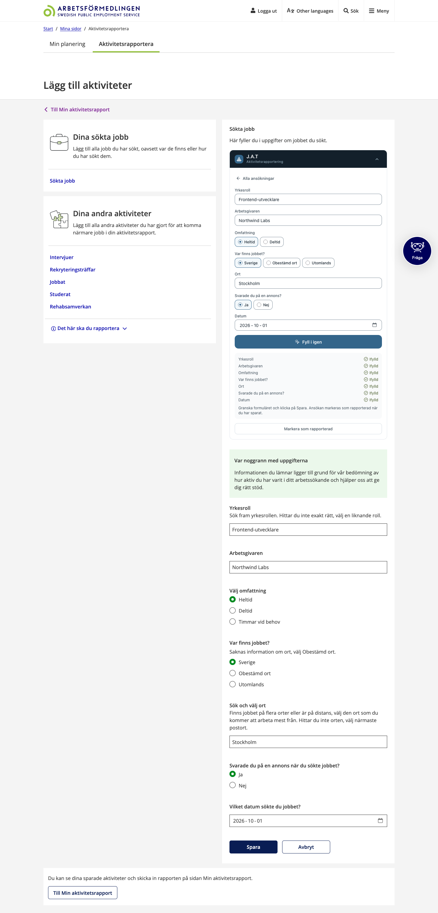
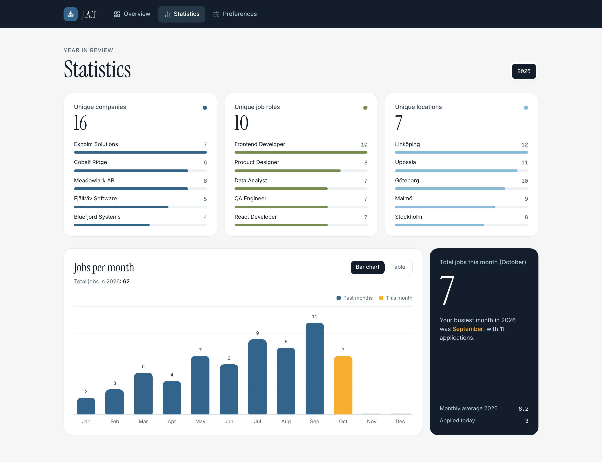
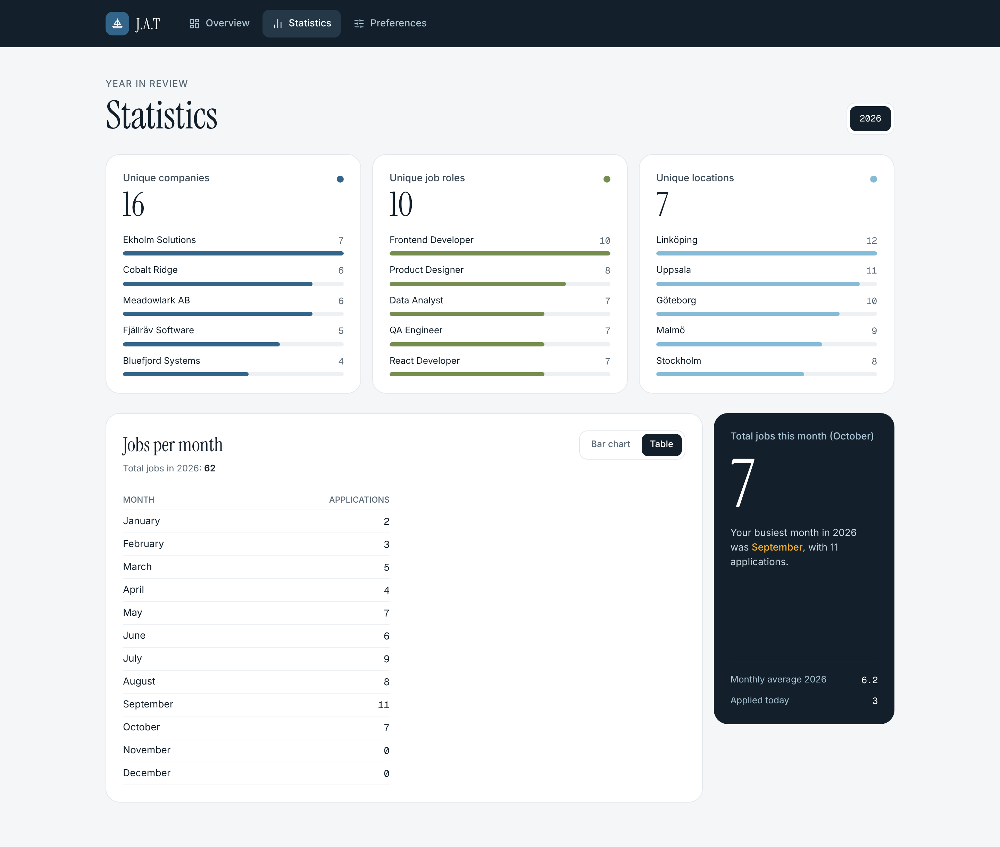
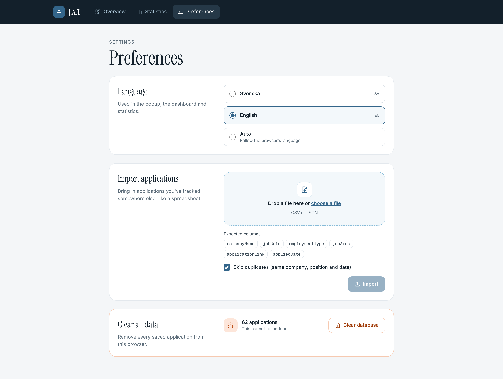

Browser extension
Keep track of every job you apply for
J.A.T saves your job applications, shows how your search is going, and fills in your activity report for Arbetsförmedlingen.
Your applications stay in your browser. Nothing is sent to a server.

How it works
From application to activity report
-
Add
Save an application in seconds
Open the popup from the toolbar and fill in the company, position, employment type, location, link and date. J.A.T saves it right away.
-
Overview
See every application in one place
The overview shows your totals for today, this month and all time. Search the list, open the posting, and mark what you have reported.

-
Overview
Fix a detail when things change
Edit an entry in a dialog, or select several applications and delete them together.

-
Arbetsförmedlingen
Your month, next to the form
Open the Sökta jobb form on Mina sidor and a J.A.T panel appears beside it, listing the applications from the month you are reporting, with the unreported ones first.

-
Arbetsförmedlingen
Preview before you fill
Pick an application to see what will be filled in. You can change the values for this report without touching the saved application.

-
Arbetsförmedlingen
Filled in, and you click Spara
J.A.T fills in the form and shows which fields it filled. It never submits for you. Nothing reaches Arbetsförmedlingen until you click Spara yourself.

-
Statistics
See how your search is going
Your top companies, positions and locations, plus a chart of jobs applied for per month.

-
Statistics
Prefer numbers? Use the table
Switch the chart to a table to read the exact count for every month.

-
Preferences
Your data, your way
Switch between English and Swedish, import applications from a file, and export them as CSV, Excel or PDF.
